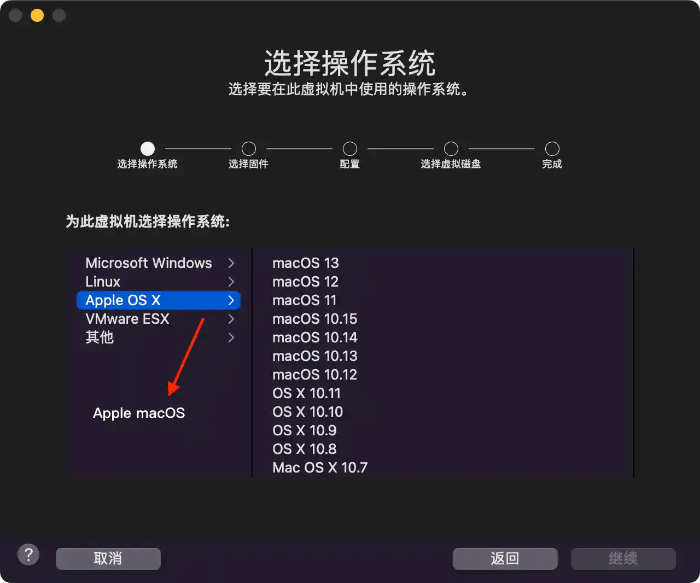
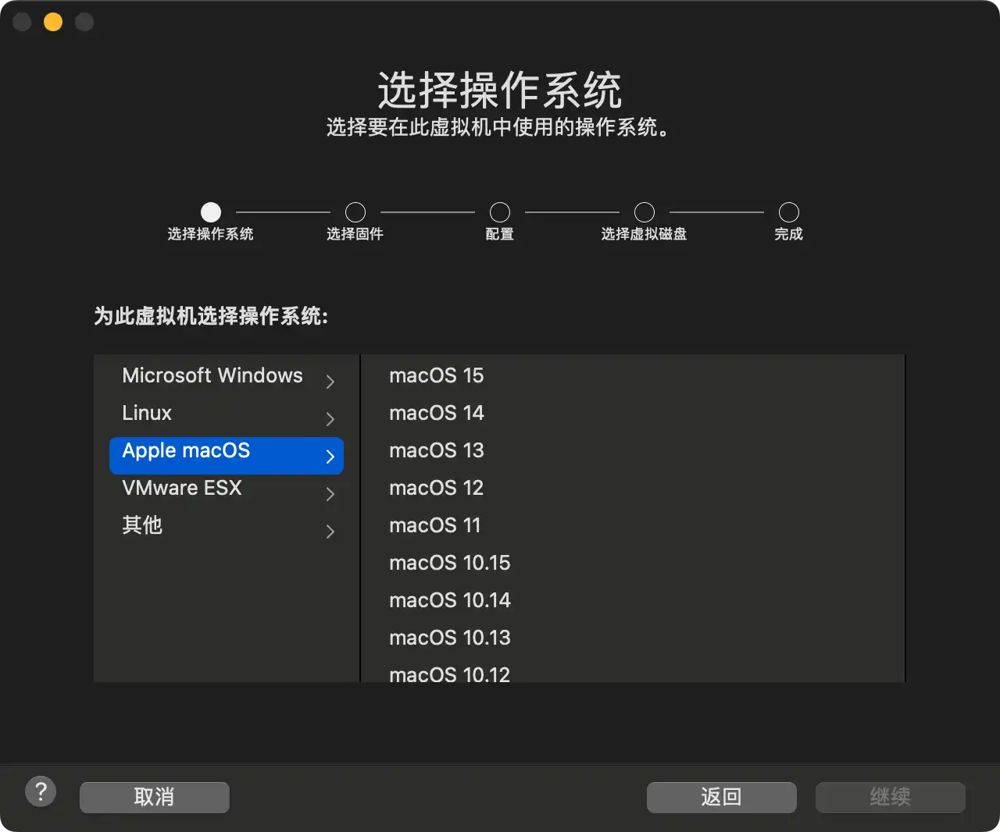

请访问原文链接：VMware Fusion 13.6 for Mac - 领先的免费桌面虚拟化软件，查看最新版。原创作品，转载请保留出处。
作者主页：sysin.org
使用 VMware Fusion 在虚拟机 (VM) 中运行 Windows、Linux、容器、Kubernetes 等而无需重新启动，充分利用 Mac 的强大功能。

VMware Desktop Hypervisor 产品订阅模式
Broadcom VMware 很高兴地宣布对桌面虚拟机管理程序产品的许可模式和版本产品进行重要更改。为了满足不断变化的市场需求并更好地满足用户的需求，我们正在从永久许可模式过渡到基于订阅的模式。此外，我们正在重组我们的产品版本，以更好地满足用户群的多样化需求。
本文由 sysin.org 翻译，重点强调 VMware Fusion 和 VMware Workstation 对个人是免费的，虽然它们仍然存在商业用途许可。
主要变化：
过渡到订阅模式：
自 2024 年 5 月 6 日起，我们的 DH 产品将仅通过基于订阅的许可模式提供。这一转变使我们能够为用户提供持续更新、改进和支持。
活跃 SnS 持有者的现有客户将在当前维护协议期间继续获得支持和更新。但是，将不再提供新的永久许可证和 SnS 许可证。
版本重组：
供个人使用的免费 Player 版本已弃用：我们的 DH 产品的免费播放器版本将被弃用，并于 2024 年 5 月 6 日生效。这一决定使我们能够专注于为所有用户层提供更加统一和功能丰富的体验。
功能强大的企业标准专业版免费供个人使用：我们很高兴地宣布，我们产品的强大且功能丰富的专业版将于 2024 年 5 月 6 日免费提供给个人使用。该版本包括以前提供的高级功能仅限企业或商业客户，使个人能够在没有任何财务障碍的情况下释放他们的创造力和生产力 (sysin)。
商业用途许可：对于需要我们产品用于商业目的的用户，可以通过订阅模式购买强大的专业版。该许可证提供对其他面向业务的功能和优先支持的访问，确保组织可以充分利用我们的产品的潜力。
适用的产品：
- VMware Fusion 13.5.2 及更高版本
- VMware Workstation 17.5.2 Pro 及更高版本
- VMware Workstation 17.5.2 Player 及更高版本
VMware Fusion：适用于 Mac 的桌面 Hypervisors
在您喜欢的环境中自由地提高生产力、敏捷性和安全性。IT 专业人士、开发人员和企业选择 VMware Fusion 桌面管理程序以获得无与伦比的操作系统支持、坚如磐石的稳定性和高级功能 (sysin)。借助 Fusion Player 和 Fusion Pro，可以在 Mac 上将几乎任何操作系统作为 VM 运行，以在本地桌面上进行开发、测试、游戏甚至模拟生产云。
在 Mac 上运行几乎任何操作系统
在 Mac 上运行 Windows 仅仅是个开始。从数百种受支持的操作系统中进行选择，从云就绪 Linux 发行版到 Intel 或 Apple silicon Mac 上的最新 Windows 11，所有这些都无需重新启动。
改进 vSphere 连接
连接到远程 vSphere 和 ESXi 服务器以启动、控制和管理 VM 和物理主机 (sysin)，提高对数据中心和主机拓扑的可见性。通过拖放操作轻松传输 VM。
为任何平台开发和测试
CLI 工具 vctl 可让您构建、运行和管理具有虚拟机安全性、性能和隔离功能的 OCI 容器和 Kubernetes 集群。
设计和演示软件解决方案
凭借在单个 Mac 上运行整个虚拟云堆栈的能力，您可以实时演示完整的解决方案，并通过安全回滚点返回到有用的配置。
VMware Fusion 13.6 新增功能
VMware Fusion 13.6 | 2024 年 9 月 3 日 | 内部版本 24238079
vmcli 简介：
vmcli 是 VMware Fusion 附带的命令行工具，允许用户直接从 Linux 或 macOS 终端或者 Windows 命令提示符与 Hypervisor 进行交互。使用 vmcli，您可以执行各种操作，例如创建新虚拟机、生成虚拟机模板、打开虚拟机电源，以及修改各种虚拟机设置。此外，也可以创建脚本来按顺序运行多个命令。有关详细信息，请参见“使用 VMware Fusion”。
支持新的客户机操作系统：
在 Intel 芯片组上
- macOS Sequoia
- Windows Server 2025
- Windows 11 版本 23H2
- Ubuntu 24.04
- Fedora 40
在 Apple Silicon 上
- Windows 11 版本 23H2
- Ubuntu 24.04
- Fedora 40
支持新的主机操作系统：
在 Intel 芯片组上
- macOS Sequoia
在 Apple Silicon 上
- macOS Sequoia
安全性增强功能：
此版本解决了 CVE-2024-38811 漏洞。有关此漏洞及其对 VMware 产品所造成影响的详细信息，请参见 VMSA-2024-0018。
VMware Fusion 13.5 新增功能
VMware Fusion 13.5.2 | 14 MAY 2024 | Build 23775688
What’s New
- 此版本引入了产品增强功能，以支持新的商业订阅和个人使用许可模式。有关详细信息，参看文中 “VMware Desktop Hypervisor 产品订阅模式”。
- 此版本解决了 CVE-2024-22267、CVE-2024-22268、CVE-2024-22269 和 CVE-2024-22270。有关这些漏洞及其对 VMware 产品影响的更多信息，请参阅 VMSA-2024-0010。
- 此版本包含安全性和错误修复。
VMware Fusion 13.5 | 19 OCT 2023 | Build 22583790
What’s New
-
新的安全增强
此版本通过提供改进的加密方案（XTS 而不是 CBC）引入了新的安全增强功能，以实现最大程度的保护并降低性能开销。有关更多信息，请参阅 https://kb.vmware.com/s/article/93071 。
-
此版本解决了 CVE-2023-34044、CVE-2023-34045 和 CVE-2023-34046。有关这些漏洞及其对 VMware 产品影响的更多信息，请参阅 VMSA-2023-0022 。
-
在 Apple Silicon Mac 上下载并安装 Windows 11 客户操作系统
现在，您可以从 Apple Silicon Mac 上的 Fusion 用户界面下载并安装 Windows 11 作为来宾操作系统。
-
使用 vTPM 设备导入和导出虚拟机
现在，您可以使用 OVF 工具导入或导出启用了 vTPM 设备的虚拟机 (sysin)。您可以将具有 vTPM 设备的虚拟机导出到 OVF 文件，然后使用 OVF 文件导入具有 vTPM 的虚拟机。
-
使用 VMREST API 管理加密虚拟机的电源操作
您现在可以使用 VMREST API 服务打开/关闭、暂停、暂停、取消暂停或检索加密虚拟机的状态。
-
VMware 硬件版本 21
- 支持多达 256 个 NVMe 设备：4 个控制器，每个控制器 64 个设备
- 在以下来宾操作系统中支持 NVMe 1.3：
- Microsoft Windows 11
- Microsoft Windows Server 2022
VMware Fusion 13.0 发行说明
VMware Fusion 13.0 | 2022 年 11 月 17 日 | 内部版本 20802013
关于 VMware Fusion
利用 VMware Fusion®，无需重新引导，即可最方便、最快捷和最可靠地在 Mac 上运行 Windows 及其他基于 x86/ARM 的操作系统。
系统要求
-
硬件
Intel 或 Apple silicon Mac 机型。
- 支持 macOS 12 Monterey 或更高版本的 Mac 机型。
-
软件
macOS 12 Monterey 和 macOS 13 Ventura。macOS 14 Sonoma (13.5 新增)。
新增功能
-
支持新的客户机操作系统
- Microsoft Windows 11
- Microsoft Windows Server 2022
- RHEL 9
- Debian 11.x
- Ubuntu 22.04
-
支持 Apple silicon Mac
Fusion 现在支持在 Apple silicon Mac 上运行 Arm 虚拟机
-
适用于 x86 和 Apple silicon 的通用软件包
提供适用于 Intel 和 Apple silicon Mac 的单个通用软件包 (.dmg)。
-
全新虚拟可信平台模块 2.0
Fusion 现在提供虚拟可信平台模块（版本 2.0）设备，以支持 Windows 11 以及需要 TPM 的其他操作系统 (sysin)。
-
新的完全或快速加密功能
现在，您可以在安全性（完全）和性能（快速）加密选项之间选择。
-
改进了图形支持：OpenGL 4.3
Fusion 现在支持将 OpenGL 4.3 用于 Intel Mac 上的 Windows 和 Linux，以及 Apple silicon Mac 上的 Linux arm64 虚拟机。
-
支持 WDDM 1.2
Fusion 现在支持将 WDDM（Windows 显示驱动程序模型）版本 1.2 用于虚拟机。
-
支持 vSphere 8 和 ESXi 8
除了 ESXi 主机的标准电源操作外，Fusion 13 还支持：
- 连接到 ESXi 8 主机或 vCenter Server 8
- 在 ESXi 和 Fusion 之间上载或下载虚拟机（目前仅限 Intel Mac）
- 通过本地桌面在远程服务器上创建新虚拟机
产品支持注意事项
- 迁移 PC 的选项在 Fusion 中不再可用。
已知问题
-
Fusion 在 Apple silicon Mac 上不支持将虚拟机上载到远程服务器或从远程服务器下载虚拟机
当在 Apple silicon Mac 上使用 Fusion 时，不支持将虚拟机上载到远程主机或从远程主机下载虚拟机 (sysin)。预计将在未来更新中解决该问题。
解决方法：
如果要将虚拟机上载到远程服务器或从远程服务器下载虚拟机，请安装 Rosetta。在终端窗口上，使用以下其中一条命令来安装 Rosetta：
softwareupdate --install-rosetta/usr/sbin/softwareupdate --install-rosetta --agree-to-license
-
使用 Fusion 在 Apple silicon Mac 上安装 RHEL 9、Ubuntu 22.04 和 Fedora 36 客户机失败
如果尝试在虚拟机上安装 Rhel 9、Ubuntu 22.04 或 Fedora 36，安装将显示黑屏，而非预期内容，并且进程不会继续。
解决方法：
创建 RHEL 9 或 Fedora 36 虚拟机后，需要一个 modprobe.blacklist-=vmwgfx 引导选项。请参阅此知识库文章以了解完整的解决方法步骤：89983。
-
使用 FreeBSD ISO 创建新虚拟机时，Fusion 可能无法正确检测操作系统版本
使用 FreeBSD 12.x 或 13.x 创建新虚拟机时，Fusion 可能会显示错误的操作系统版本。
注：
这不会影响操作系统的安装，并且可以在关闭虚拟机电源后手动更改客户机操作系统类型。
解决方法：
将操作系统类型手动设置为相应版本的 FreeBSD。
-
某些操作系统可能默认使用 X11 窗口系统，该系统未受到主动维护。在此模式下，可能存在图形失真情况。
默认使用 X11 来渲染桌面窗口管理器的操作系统可能会出现图形失真，而非显示预期效果。
解决方法：
Wayland 渲染的桌面窗口管理器不存在该问题。解决方法是从 X11 切换到 Wayland。切换的过程因每个操作系统而异。
已解决的问题
-
vmnet-natd 进程的 CPU 占用率过高
当虚拟机正在运行并使用网络资源时，主机 vmnet-natd 进程对 CPU 资源的占用率可能会越来越高，直至达到 99%。
已解决该问题。
-
创建新虚拟机时，使用 Fedora（64 位）客户机操作系统无法更改固件类型
尝试使用 Fedora（64 位）客户机操作系统创建虚拟机时，没有提供在 UEFI 和 BIOS 之间选择的选项。
已解决该问题。
-
在指定 IP 子网时尝试创建自定义 vmnet 失败
如果在创建 vmnet 时指定了自定义子网，则无法在 GUI 中创建 vmnet。子网 IP 自动分配不受影响。
已解决该问题。
-
在虚拟机中触发声音事件时，Fusion 可能会出现一个侵入式弹出窗口，显示有关声音设备的错误
对于 Fusion on Apple silicon，当在客户机操作系统中播放声音时，将显示一个对话框，其中包含以下错误消息：
Error in creating sound stream.
Playback may not work.已解决该问题。
-
安全性问题
安全性问题
- OpenSSL 已更新到 1.1.1q。
下载地址
VMware Fusion 13.0.0 macOS Universal (for Intel-based and Apple silicon Macs)
- 百度网盘链接：https://pan.baidu.com/s/1N1uz4ID7CkEeXkIIy7Z80w?pwd=u5l8
Name: VMware-Fusion-13.0.0-20802013_universal.dmg
File size: 672.06 MB
Release Date: 2022-11-17
SHA256SUM: 40bb9fbd4b2a18b48138a7fb3285d89187d50caab10506cff81b367b6edc858d
系统要求：macOS Monterey 12.0 及更高版本
VMware Fusion 13.0.2 (for Intel-based and Apple silicon Macs)
- 百度网盘链接：https://pan.baidu.com/s/1TzKXznQsHXJTlg9tLAUHbg?pwd=ne3y
File size: 672.09 MB
Name: VMware-Fusion-13.0.2-21581413_universal.dmg
Release Date: 2023-04-25
SHA256SUM: c86b40823b97334f20b4e6b475b488ec23faf06c986e291965b9e56f7b44c042
系统要求：macOS Monterey 12.0 及更高版本
VMware Fusion 13.5.0 (for Intel-based and Apple silicon Macs)
VMware Fusion 13.5.1 (for Intel-based and Apple silicon Macs)
VMware Fusion 13.5.2 (for Intel-based and Apple silicon Macs) - for Personal Use (Free)
- 百度网盘链接：https://pan.baidu.com/s/1WUoAqlpo3VXv2fZifkczTw?pwd=qf02
Filename: VMware-Fusion-13.5.0-22583790_universal.dmg
Release Date: 2023-10-19
系统要求：macOS 12 Monterey and macOS 13 Ventura
VMware Fusion 13.6 (for Intel-based and Apple silicon Macs) - for Personal Use (Free)
- 百度网盘链接：https://pan.baidu.com/s/1txYNV16Na08qEg6MQDBHPg?pwd=thuv
Filename: VMware-Fusion-13.6.0-24238079_universal.dmg
Last Updated: Aug 27, 2024
系统要求：macOS Ventura 13.0 及更高版本
OEM BIOS 版本：VMware Fusion 13.6 OEM BIOS 2.7 - 在 macOS 中运行 Windows 虚拟机的最佳方式

终于接受了本站的修改建议，使用当前系统名称 Apple macOS，但是第三项应该是 VMware ESXi 才对。


文章用于推荐和分享优秀的软件产品及其相关技术，所有软件默认提供官方原版（免费版或试用版），免费分享。对于部分产品笔者加入了自己的理解和分析，方便学习和研究使用。任何内容若侵犯了您的版权，请联系作者删除。如果您喜欢这篇文章或者觉得它对您有所帮助，或者发现有不当之处，欢迎您发表评论，也欢迎您分享这个网站，或者赞赏一下作者，谢谢！
 支付宝赞赏
支付宝赞赏
 微信赞赏
微信赞赏
赞赏一下